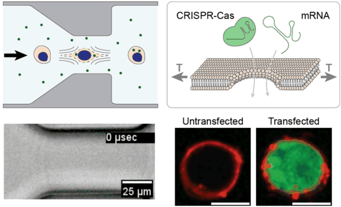
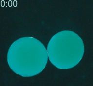
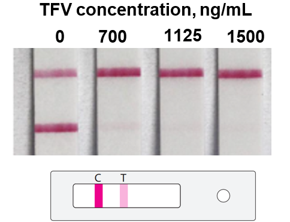
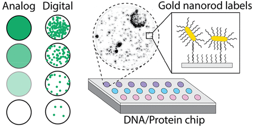

Derin is an NIH K99 Investigator at Massachusetts General Hospital (08/2022-) and an Instructor at Harvard Medical School (01/2023-). He received a B.S. in Mechanical & Aerospace Engineering from Cornell University (2008-2011) and his Ph.D. in Biomedical Engineering from Boston University (2011-2017). From 2018 to 2022 he was a postdoctoral fellow in the laboratory of Mehmet Toner at MGH.
His research program at the Center for Engineering in Medicine & Surgery is focused on discovering new ways to measure and control biological systems at the nanoscale, and applying those discoveries to a range of clinical applications in molecular diagnostics, therapeutics, and disease prevention.
Google Scholar Profile| 09/2023-09/2024 | Stakeholder-inspired Research Project Award, ATP-Bio |
| 08/2022-08/2026 | NIH Pathway to Independence Award (K99/R00) |
My research is focused on developing new tools at the interface between micro-/nanoscale systems and biological systems, towards the overarching goal of improving human health and longevity. This rich and growing field of study inherits from many foundational disciplines across the physical sciences, life sciences, and engineering.
A major thrust of my current work is investigating ways to improve the safety, efficiency, and accessibility of therapeutic gene editing. I am particularly interested in technologies for editing large numbers of cells outside of the body, which could have signficant clinical impacts across cancer therapy, global health, regenerative medicine, autoimmune disease, and metabolic disorders.
|  |
High throughput intracellular delivery by viscoelastic mechanoporation (2020-)Cell and gene therapies face unprecedented manufacturing challenges associated with efficient genetic modification of large numbers of cells outside of the body. We are leveraging the unique properties of viscoelastic fluids to stretch and temporarily permeabilize the plasma membrane of cells with extremely high uniformity and high throughput. We are investigating applications of efficiently delivering CRISPR enzymes to millions of cells, towards the goal of improving the safety, efficacy, and accessibility of next-generation cell & gene therapies. |
|  |
Microsystems for cryopreservation (2018-)Cryopreservation is the science of slowing or ceasing biological function at low temperatures. A central challenge in cryopreservation is controlling the distribution and phase of water within the specimen. We are developing microscale devices and materials to control the transport of water, cryoprotective agents, and heat during cryopreservation for a variety of difficult-to-study samples such as cancer cells and pathogens. |
|  |
Point-of-care molecular diagnostics for antiretroviral medication adherence (2018-2021)Antiretroviral medications have been developed for the treatment and prevention of HIV, but in practice their efficiacy is highly dependent on patients maintaining adequate drug levels in the body. We developed tests to rapidly measure medication levels and then validated them with hundreds of patient samples. Along the way we invented new biosensing strategies based on measuring the direct pharmacological activity of the medicine itself. |
|  |
Real-time tracking of single biomolecular binding events (2014-2018)Low-abundance molecular biomarkers are a reservoir of untapped diagnostic information across a range of clinical applications. We developed methods to advance the state-of-the-art sensitivity and performance of ultra-sensitive molecular diagnostic tests. This achievement was enabled by our prior work developing a record-breaking nanoparticle imaging system that could detect individual 60 nm nanoparticles across the entire field of view of a 10x microscope objective. For the sake of comparison, this is like detecting and tracking individual 2 meter tall people across a region about five times the size of Boston, or about half the size of Los Angeles (21 km by 29 km). |
"Derin was my saving grace. I stayed after class all the time to ask questions to clarify what was unclear in lecture. He is a truly gifted teacher and was passionate about simply understanding the world around him. He always knew where my questions would stem from, how to address them in an efficient manner, and where to point me to next to really lock it all in. I would've loved for him to teach more of the course if possible."
- Course evaluation, Harvard University ES123 "Fluid Mechanics and Transport Phenomena" (Spring 2023)